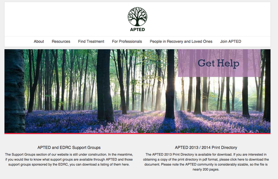
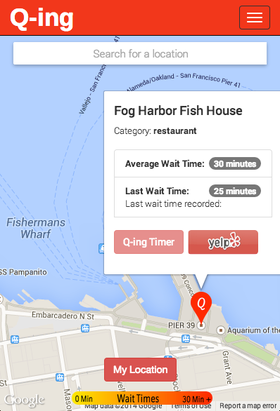
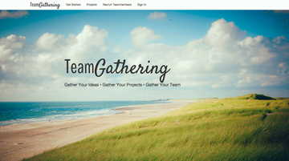
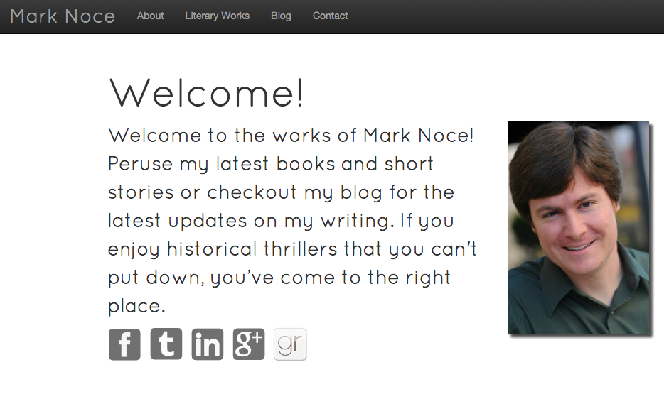

Projects
APTED
APTED is a non profit based in the San Francisco Bay Area that helps connect people recovering from eating disorders with medical professionals and treatment programs. This web application allows medical providers and programs to create profiles and advertise to people in recovery. It also is a content management system that allows administrators to create donation, membership and advertising packages as well as change the content on the site.
Development
Our team at Deploy created the APTED web application using React JS with Flux architecture. Each component on the site is dynamically generated using React and Flux and the front end styling was created using Twitter Bootstrap.
Our back end was built using Ruby on Rails and used as an API. Our database management was provided by a combination of PostgreSQL and Firebase. Finally, for donations, advertising and membership purchases we used the Stripe API for online credit card purchases.
Q-ing
Q-ing is a crowd-sourced, timing app that provides users the information needed to avoid long lines at eateries, bathrooms, and other attractions.
Users can check average wait times, submit their own time and add new locations. Q-ing uses the Google Maps API to determine and track locations and the Yelp API to provide relevant alternatives of nearby businesses. Q-ing, avoid the traffic of life.
Development
I along with 3 team members created Q-ing as a client side app that utilized the Google Maps API as well as the Yelp API
The app is mostly javascript with a Ruby on Rails back end which serves mostly as an API. We put together the app in just over a week as our final project at DevBoot Camp
Check out the app at our heroku site: Q-ing

TeamGathering
TeamGathering is a place where professionals can connect with one another to create and recruit people for projects. It allows for people that do not have an avenue to make further steps to fulfilling an idea or completing a project to do so with other people who are also interested in creating and innovating.
TeamGathering is being completed using Ruby on Rails with JQuery effects and styled using the Bootstrap framework. The scroll effects are all being completed using JQuery to have a smoother User Interface.

Mark Noce Official Website
Mark Noce is a historical fiction writer who has two books that are about to be published that are based in medieval Wales.
On his site, Mark wanted readers to be able to read his blog, contact him and check out his other literary works including other books and short stories.
Development
Mark wanted a visually appealing site with some interactivity without being too loud. I suggested we use a parallax effect along with using bootstrap to give the site a clean feel.
Along with bootstrap I'm using javascript and jquery for the visual effects and the site has a ruby on rails back end.
Check out the progress I've made on the heroku site: Mark Noce Official Website